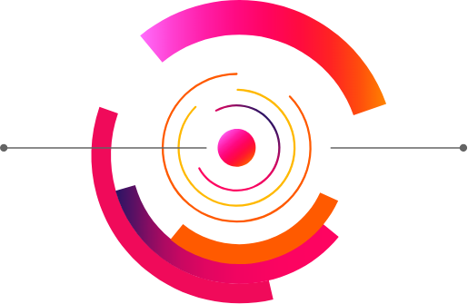

Justificación del recurso tecnológico
Es importante tener en cuenta que los continuos cambios del mundo actual y la aparición de las nuevas Tecnologías de la Información y la Comunicación (TIC) han influido en la manera de aprender de los niños y, por lo tanto, es necesario hacer un cambio en la manera de enseñar.
Es importante tener en cuenta que los continuos cambios del mundo actual y la aparición de las nuevas Tecnologías de la Información y la Comunicación (TIC) han influido en la manera de aprender de los niños y, por lo tanto, es necesario hacer un cambio en la manera de enseñar. La gamificación responde adecuadamente a esta demanda de metodologías innovadoras sobre todo si tenemos en cuenta que los niños pasan largas horas jugando a los videojuegos que cuentan con una serie de elementos que los involucran en la actividad y los animan a seguir jugando. Estos factores son los que pretende aprovechar la gamificación para lograr que el alumno se sienta involucrado en su propio proceso de aprendizaje.
Entre todas las nuevas metodologías que han surgido en los últimos tiempos, aparece el juego, no como entretenimiento, sino como herramienta de aprendizaje. Desde los primeros años de vida, los niños tienen interés por el juego, ya que es su forma de aprender e interactuar con el medio que les rodea.
Por todo esto, la gamificación trata de coger los elementos atractivos del juego para aplicarlos en la educación, logrando así un mayor grado de motivación en el alumnado y una mejora en su rendimiento escolar. Cualquier actividad realizada en contexto de la gamificación busca lograr tres claros objetivos: por un lado, la fidelización con el alumno, al crear un vínculo con el contenido que se está trabajando. Por otro lado, busca ser una herramienta contra el aburrimiento y motivarles. Finalmente, quiere optimizar y recompensar al alumno en aquellas tareas en las que no hay ningún incentivo más que el propio aprendizaje.
ClassDojo es, hoy en día, una de las herramientas de gamificación educativa que más éxito está teniendo. El uso práctico de la aplicación permite interactuar con los alumnos. Cada alumno tendrá su propio avatar, un muñeco que les encanta personalizar. El profesor podrá otorgar puntuación de manera individual a cada alumno, a la clase o a grupos de niños. Podrá hacer un seguimiento de cada niño/a y esta información también será visible para las familias que les permite estar al corriente de los progresos o sus actitudes en el aula. Esta funcionalidad es la parte que más les motiva a los alumnos y que hace que se rijan por los objetivos planteados para poder conseguir sus recompensas. Una aplicación con grandes posibilidades, cuyo uso es viable desde infantil a secundaria. Para ello se hacen tres tipos de cuentas: una cuenta para el profesor; será el encargado de crear la clase, incluir a los alumnos, formar los grupos, y algo interesante, la cuenta de profesor puede tener varias clases asignadas, y contar con más profesorado en ellas. Una cuenta de alumno donde verá las puntuaciones que se le otorgan y la información que se cuelgue en el muro (Class Story). Además, podrá hacer publicaciones que previamente son revisadas por el profesor. Por último, la cuenta de los padres es el maestro quien invita a los padres para unirse a la clase a través de un código. En la cuenta-familia verán las notificaciones generales en el muro, los mensajes del tutor y la evolución de su hijo. Como característica importante: sólo verá la información de su hijo/a, no podrá ver las del resto de alumnos, de ahí lo positivo en cuanto a privacidad. Al igual que el profesor podrá tener más cuentas, de aquellos niños que sea responsable.
¿El recurso tecnológico aporta un valor añadido a la experiencia socioeducativa?
Gracias a esta aplicación educativa se pueden conseguir una sinergia positiva entre los distintos agentes implicados directamente en el proceso educativo, como son los padres el profesorado y los alumnos. De este modo favorece una relación positiva, que fomente la participación de los padres en la vida escolar, así los niños tendrán una mayor autoestima, que se traduce en un mejor rendimiento escolar, mejores relaciones padres-hijos y actitudes más positivas de los padres hacia la escuela.
¿El recurso tecnológico responde a su fundamentación teórica?
Cumple con el modelo tecnológico-didáctico, defendiendo la innovación, el diseño, los nuevos formatos digitales, y el diálogo intrapersonal e interpersonal.